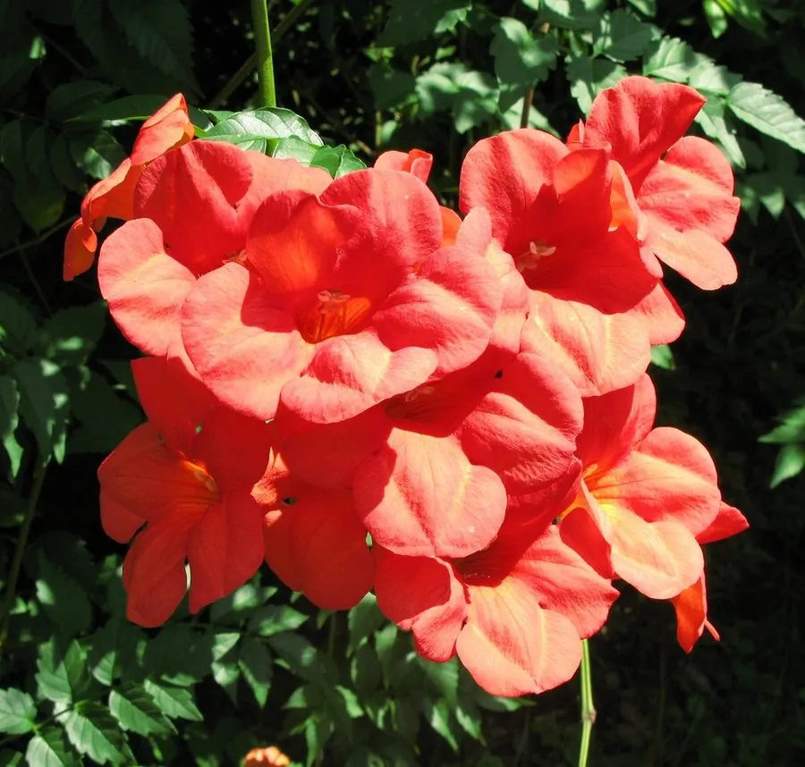

灌木与花木 · 植物界
凌霄 Campsis grandiflora

攀附墙面或树干生长的木质藤本，夏季开出橙红色喇叭状花朵，是庭院棚架与墙面绿化的优良传统花木。
- 分类
- 门被子植物门纲木兰纲目唇形目科紫葳科属凌霄属
- 栖息环境
- 海拔 1500 米以下的山区、平川与庭院，喜光喜温暖，攀附墙面生长
- 地理分布
- 原产中国长江流域及华北、华东地区，各地庭院广泛栽培
- 保护级别
- 暂无评估；中国未列入国家重点保护野生植物名录
物种志
凌霄为落叶木质藤本，靠气生根攀附于墙面或树干上，茎长达 10 m 以上；奇数羽状复叶对生，小叶 7–9 枚，卵形至卵状披针形，边缘具粗齿。花期 6–9 月，聚伞花序顶生，花冠漏斗状、橙红色，长 5–7 cm，花形如喇叭，色彩明丽；蒴果长圆形，成熟时开裂，种子扁平并具半透明翅。
凌霄原产中国长江流域及华北、华东地区，喜光、喜温暖湿润，也耐半阴，适宜排水良好、肥沃的土壤，借气生根攀附墙面或树干。夏季花开满架，是庭院棚架、墙垣与门廊的优良绿化藤本；花可入药，中药“凌霄花”能凉血化瘀；根与叶亦可入药。需要注意的是，凌霄有较强的攀附力，不宜种植在墙体较薄或树木上，以免影响建筑或寄主植物生长。
形态与习性
- 藤长可达 10 m 以上
- 花期6–9 月，花冠橙红色、漏斗状
- 果期10–11 月，蒴果长圆形
- 光照喜光，也耐半阴
- 水分喜湿润，怕积水
- 土壤排水良好的肥沃壤土
- 主要用途棚架与墙面绿化、凌霄花入药
趣味知识
- 凌霄在茎节处长出气生根，能牢牢吸附在墙面和树干上向上攀爬。
- 凌霄花形如橙红色小喇叭，花期可长达三个月，是夏季重要的观花藤本。
- 凌霄花是传统中药，具有凉血化瘀的功效，但孕妇忌用。
- 凌霄攀附力强，不宜直接种在薄墙或弱小树木旁，以免造成损伤。